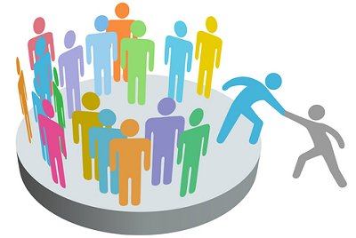
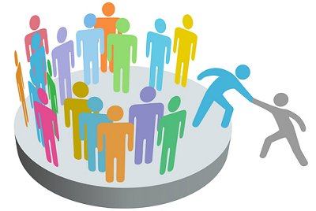

Designed by: webgroup


Vi bor i et variert samfunn som inneholder alle klasser. Da er det noen som ikke har råd til å kjøpe det man trenger fordi de har ikke den samme muligheten som andre har, på grunn av dårlig økonomi eller andre grunner som sykdommer. I tillegg er det mange som mista jobben sin på grunn av korona viruset. Det fører til arbeidsledighet i hele verden. Samtidig er det mange mennesker som er rike i verden som har mye ting som de kaster fordi de trenger de ikke lenger på grunn de kjøper stadig nye ting, mens det er mange som trenger det som blir kastet. I tillegg til at det som blir kastet påvirker både miljøet og naturressurser.
Designed by: webgroup
